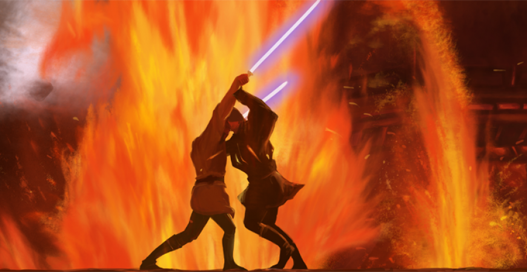

Jedi et vétéran de la Guerre des Clones, on compte parmi les exploits d'Obi-Wan Kenobi le fait d'avoir survécu à des duels l'opposant à trois seigneurs Sith et d'avoir entraîné deux générations de Skywalker avant de ne faire plus qu'un avec la Force.
|  | ||||
|
|